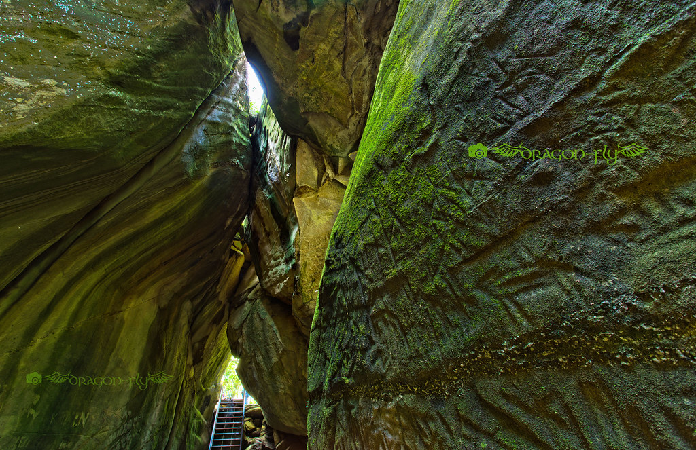

Wayanad
Wayanad district stands on the southern tip of the Deccan plateau and includes part of the Western Ghats. The western parts of the district bordering Kozhikode district consists of the Western Ghats covered with dense forest. The district forms a part of the south western Deccan plateau, and is sloped to the east. Quite a large area of the district is covered by forest but the continued and indiscriminate exploitation of the natural resources point towards an imminent[55] environmental crisis. There are a lot of trekking points in this district. Chembra Peak (2,100m) is the highest peak in the Wayanad district. Banasura Hill (2,079m) is also similar to height of Chembra hill. The district is blessed with rich water resources. There are east flowing and west flowing rivers in the region. One of the major rivers in the district is Kabini River, a tributary of River Kaveri; it is also one of the only three east flowing rivers in Kerala. Kabani has many tributaries including Thirunelli River, Panamaram River and Mananthavady River. All these rivulets help form a rich water resource as well as a distinct landscape for the district. Various streams flow into the Panamaram rivulet while it passes through the mountain gorges and finally the river falls down into Panamaram Valley. After flowing through the district for a certain distance, River Panamaram joins Mananthavady River, which originates from the lower regions of the peak called 'Thondarmudi'.
Top Destinations
Meenmutty Waterfalls
Major attraction and one of the scenic Wayanad tourist places is Meenmutty Waterfalls located at a distance of around 29 kilometers from Kalpetta. It is a famous waterfall in the state of Kerala. A three tiered waterfall is a surprising sight to be visited. The waterfalls fall down from a height of 300 meters. To reach the waterfalls, you can do a trekking for about 2 kilometers through the thick jungles from the Wayanad-Ooty Road. It becomes very dangerous during monsoon and rainy seasons. The gushing waterfalls are located near the Neyyar Reservoir area. People with an adrenaline rush come here in plenty to experience the different levels of rock climbing and trekking. The location exhibits an ideal blend of stunning natural sights with amazing trekking trails in Wayanad. Banasurasagar Dam is the closest attraction which gives the waterfalls fame among the adventure lovers.

Wayanad Wildlife Sanctuary
A famous animal sanctuary in Kerala and one of the major places to visit in Wayanad is Wayanad Wildlife Sanctuary which has an extent of 344.4 square kilometers with four ranges. The ranges are called Sulthan Bathery, Muthanga, Kurichiat and Tholpetty. It acts as a haven for many large and wild animals such Indian Bison, elephants, deer, tigers etc along with some unique birds. It is the second largest wildlife sanctuary in Kerala bestowed with lush green nature. Some endangered species of flora and fauna are there inside the sanctuary. It was established in the year of 1973 and now it is a major part of the Nilgiri Biosphere Reserve and a protected area network of Nagarhole and Bandipur of Karnataka in the north east part as well as of Mudumalai in the southeast part.
Edakkal Caves
Travel back in time to the Stone Age with a visit to Edakkal Caves that are located on the Ambukuthi Hills. Edakkal literally translates to ‘a stone in between’ and this cave and showcases a natural masterpiece. It is associated with many myths and considered as one of the most sacred places to visit in Wayanad. Edakkal caves are not actually considered to be caves in a scientific sense yet remain a great piece of archaeological curiosity for tourists. These caves are identified as a Neolithic settlement and present the evidence of a pre-historic society of highly civilised people. These caves draw in a number of history buffs and students of archaeology who wish to explore these mysterious caves.